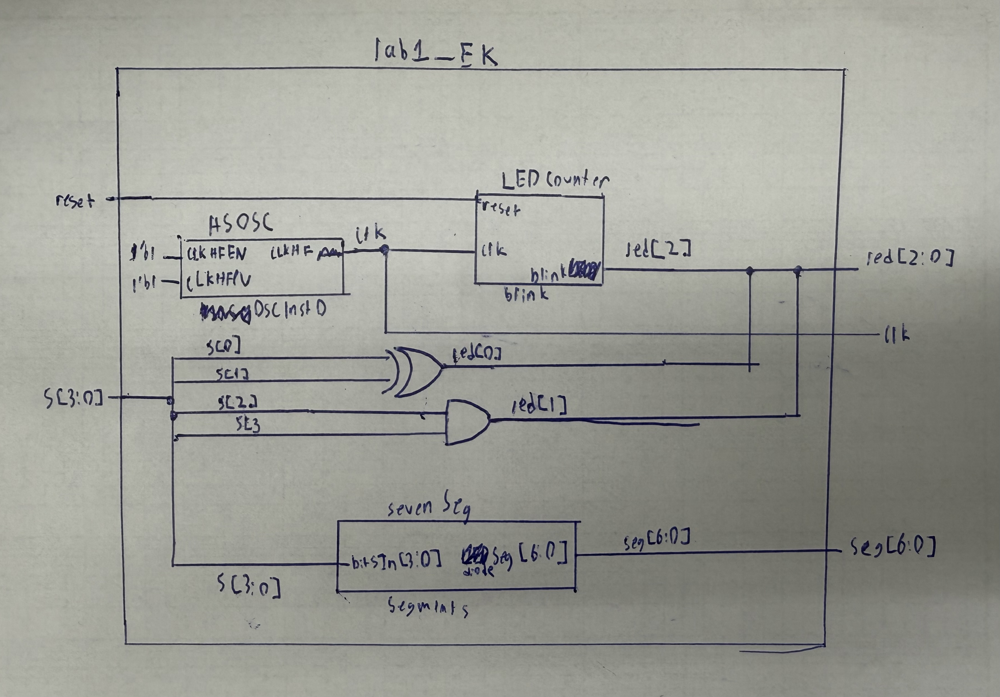
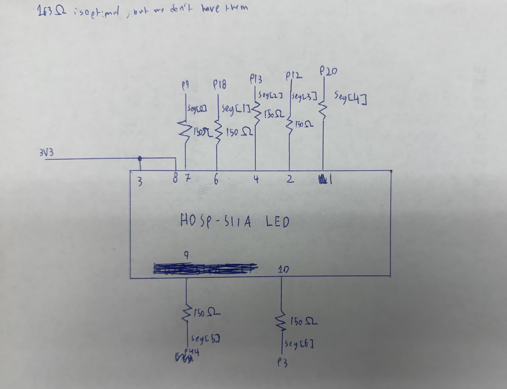
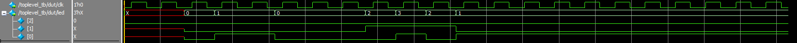
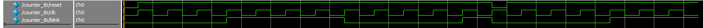
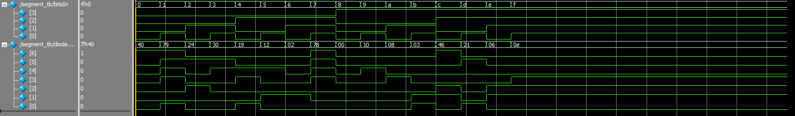
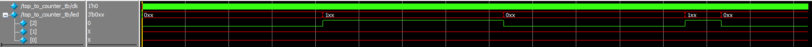
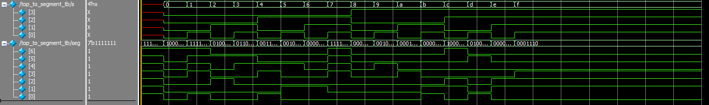
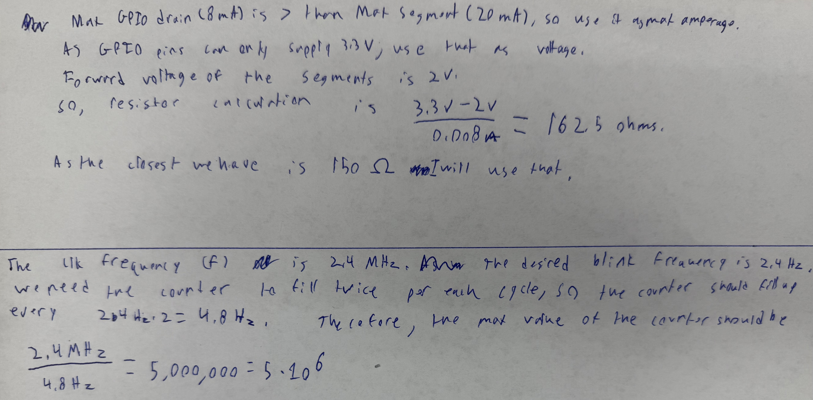

Lab 1: FPGA and MCU Setup and Testing
Introduction
In this lab, the microPs dev board was assembled and a design was implemented on the FPGA to perform 3 tasks. The first task was to illuminate two of the on-board LED corresponding to combinational logic based on the state of 4 on board switches. The first LED was to be illuminated based on an XOR that took in the states of switches 0 and 1. The second LED was to be illuminated based on an AND that took in the states of switches 2 and 3. The second task was to blink one of the on-board LEDs at a frequency of 2.4Hz using the on-board high-speed oscillator. The third task was to illuminate a seven segment display with a number corresponding to the state of the 4 on-board switches. The high speed oscillator was configured at a frequency of 24 MHz and divided down using a counter to achieve a blinking frequency of 2.4 Hz.
Design and Testing Methodology
For the combinational LEDs, one-line assign statements were used to implement the logic for the LEDs. This was tested in simulation using an automated test bench that tried all possible combinations of the 4 switches and checked that the correct LEDs were illuminated.
//led[0] equates to a XOR of switches 0 and 1
assign led[0] = s[0] ^ s[1];
//led[1] equates to an AND of switches 2 and 3
assign led[1] = s[2] && s[3];The on-board high-speed oscillator (HSOSC) from the iCE40 UltraPlus primitive library was used to generate a clock signal at 24 MHz. Then, a 23-bit 5,000,000 max counter was used to divide the high frequency clock signal down so that the blinking frequency would be at 2.4Hz. See calculations section for how 5,000,000 was derived. The function was parametrized, so alternative versions could be used to achieve different blinking frequencies. This was tested in simulation using an automated test bench that confirmed that the counter was counting correctly, the LED would illuminate at the right time, and that the counter would reset after reaching the max value and when the reset switch was pressed.
The seven segment display was implemented using an always_comb case block that used the input from the 4 switches as a 4-bit hexadecimal number and converted each number to the corresponding 7-bit output for the seven segment display. This was tested in simulation using an automated test bench that tried all possible combinations of the 4 switches and checked that the correct segments were illuminated.
always_comb
begin
case(bitsIn)
4'h0: diodeSeg = ~(7'b0111111);
4'h1: diodeSeg = ~(7'b0000110);
4'h2: diodeSeg = ~(7'b1011011);
4'h3: diodeSeg = ~(7'b1001111);
4'h4: diodeSeg = ~(7'b1100110);
4'h5: diodeSeg = ~(7'b1101101);
4'h6: diodeSeg = ~(7'b1111101);
4'h7: diodeSeg = ~(7'b0000111);
4'h8: diodeSeg = ~(7'b1111111);
4'h9: diodeSeg = ~(7'b1101111);
4'hA: diodeSeg = ~(7'b1110111);
4'hB: diodeSeg = ~(7'b1111100);
4'hC: diodeSeg = ~(7'b0111001);
4'hD: diodeSeg = ~(7'b1011110);
4'hE: diodeSeg = ~(7'b1111001);
4'hF: diodeSeg = ~(7'b1110001);
default: diodeSeg = ~(7'b0000000);
endcase
endLastly, the overall design was tested in simulation using an automated test bench that confirmed that sending the correct inputs to the top level module would result in the correct outputs for the LEDs and seven segment display.
Technical Documentation
The source code for the project can be found in the associated Github repository.
Block Diagram

The block diagram in Figure 1 demonstrates the overall architecture of the design. The top-level module lab1_EK includes three submodules: the high-speed oscillator block (HSOSC), the seven segment display module (sevenSeg), and the counter module (clk_divider).
Schematic

Figure 2 shows the physical layout of the design. Internal 100 k\(\Omega\) pullup resistors were used on all inputs to ensure the pins would not be floating. The on board LEDs were connected using a 1 k\(\Omega\) current-limiting resistor to ensure the output current (~2.6 mA) did not exceed the maximum output current of the FPGA I/O pins. The seven segment displays were driven at 3.3V so the reverse voltage from the FPGA I/O pins would match. The seven segment displays were connected using a 150 \(\Omega\) current limiting resistor to ensure the output current does not exceed the maximum drain current of the FPGA I/O pins. A resistor was needed for each segment to maintain even current (and brightness) across all segments. The resistor values are derived in Figure 8.
Results and Discussion
This design was able to achieve all tasks. In both simulation and on the physical FPGA, the combinational logic for the LEDs worked as intended, the blinking LED illuminated at a frequency of 2.4 Hz, and the seven segment display correctly displayed the hexadecimal number corresponding to the state of the 4 switches. However, something to note is that using more than one seven segment display would overwhelm the maximum current draw of the FPGA supply pins, so an additional power supply would be necessary.
Testbench Simulation
To keep the waveforms legible, the automatic test benches were split into seperate test benches for each submodule and their respective top-level connections. The results of the test benches are shown below.

# PASSED! The HSOSC generated clk behaves as desired at time: 42000.
# PASSED! The HSOSC generated clk behaves as desired at time: 63000.
# PASSED! The led controller behaves as desired at time: 125000.
# PASSED! The led controller behaves as desired at time: 167000.
# PASSED! The led controller behaves as desired at time: 208000.
# PASSED! The led controller behaves as desired at time: 250000.
# PASSED! The led controller behaves as desired at time: 292000.
# PASSED! The led controller behaves as desired at time: 333000.
# PASSED! The led controller behaves as desired at time: 375000.
# PASSED! The led controller behaves as desired at time: 417000.
# PASSED! The led controller behaves as desired at time: 458000.
# PASSED! The led controller behaves as desired at time: 500000.
# PASSED! The counter submodule behaves as desired at time: 1000.
# PASSED! The counter submodule behaves as desired at time: 8000.
# PASSED! The counter submodule behaves as desired at time: 16000.
# PASSED! The counter submodule behaves as desired at time: 26000.
# PASSED! The counter submodule behaves as desired at time: 34000.
# PASSED! The seven segment display controller behaves as desired at time: 4200.
# PASSED! The seven segment display controller behaves as desired at time: 8300.
# PASSED! The seven segment display controller behaves as desired at time: 12500.
# PASSED! The seven segment display controller behaves as desired at time: 16700.
# PASSED! The seven segment display controller behaves as desired at time: 20800.
# PASSED! The seven segment display controller behaves as desired at time: 25000.
# PASSED! The seven segment display controller behaves as desired at time: 29200.
# PASSED! The seven segment display controller behaves as desired at time: 33300.
# PASSED! The seven segment display controller behaves as desired at time: 37500.
# PASSED! The seven segment display controller behaves as desired at time: 41700.
# PASSED! The seven segment display controller behaves as desired at time: 45800.
# PASSED! The seven segment display controller behaves as desired at time: 50000.
# PASSED! The seven segment display controller behaves as desired at time: 54200.
# PASSED! The seven segment display controller behaves as desired at time: 58300.
# PASSED! The seven segment display controller behaves as desired at time: 62500.
# PASSED! The seven segment display controller behaves as desired at time: 66700.
# PASSED! The counter submodule connection behaves as desired at time: 208333376000.
# PASSED! The counter submodule connection behaves as desired at time: 416666710000.
# PASSED! The counter submodule connection behaves as desired at time: 666666751000.
# PASSED! The seven segment top module connection behaves as desired at time: 83000.
# PASSED! The seven segment top module connection behaves as desired at time: 125000.
# PASSED! The seven segment top module connection behaves as desired at time: 167000.
# PASSED! The seven segment top module connection behaves as desired at time: 208000.
# PASSED! The seven segment top module connection behaves as desired at time: 250000.
# PASSED! The seven segment top module connection behaves as desired at time: 292000.
# PASSED! The seven segment top module connection behaves as desired at time: 333000.
# PASSED! The seven segment top module connection behaves as desired at time: 375000.
# PASSED! The seven segment top module connection behaves as desired at time: 417000.
# PASSED! The seven segment top module connection behaves as desired at time: 458000.
# PASSED! The seven segment top module connection behaves as desired at time: 500000.
# PASSED! The seven segment top module connection behaves as desired at time: 542000.
# PASSED! The seven segment top module connection behaves as desired at time: 583000.
# PASSED! The seven segment top module connection behaves as desired at time: 625000.
# PASSED! The seven segment top module connection behaves as desired at time: 667000.
# PASSED! The seven segment top module connection behaves as desired at time: 708000.Conclusion
The dev board was assembled properly and the FPGA design successfully drove LEDs based on combinational logic, blinked an external LED using the on-board high-speed oscillator at 2.4 Hz, and controlled a seven segment display.
I spent a total of ten hours working on this lab, but a significant (>3 hrs) amount of time was spent getting Lattice Radiant to work properly.
Calculations

AI Prototype Summary
module led_blink #(
parameter int unsigned CLK_FREQ_HZ = 48_000_000,
parameter int unsigned BLINK_HZ = 2
) (
output logic led
);
// Toggle the LED every half-period.
localparam int unsigned HALF_PERIOD =
CLK_FREQ_HZ / (2 * BLINK_HZ);
// Width automatically sized for the required count.
localparam int unsigned COUNTER_WIDTH =
(HALF_PERIOD <= 1) ? 1 : $clog2(HALF_PERIOD);
logic clk;
logic [COUNTER_WIDTH-1:0] counter;
// Lattice iCE40 UltraPlus internal high-frequency oscillator.
HSOSC #(
.CLKHF_DIV(2'b00) // 48 MHz
) hfosc (
.CLKHFPU(1'b1), // Power up oscillator
.CLKHFEN(1'b1), // Enable clock output
.CLKHF (clk)
);
// Divide 48 MHz down to a 2 Hz LED blink.
always_ff @(posedge clk) begin
if (counter == HALF_PERIOD - 1) begin
counter <= '0;
led <= ~led;
end
else begin
counter <= counter + 1'b1;
end
end
endmoduleI used the free non-signed-in version of ChatGPT to generate this code using the provided LLM prompt. Initially the code did not compile due to it assuming that I was using “Yosys/nexpnr”, which lead it to use SB_HFOSC instead of HSOSC. However, after I specified that I was using Lattice Radiant, it switched it to using the correct HSOSC module. This was able to successfully synthesize and implement on the FPGA, and the LED blinked at the correct frequency.
I would say that is code is of fairly decent quality. It comments well, uses descriptive variable names, and uses cohesive capitalization and formatting. However, it over defines many variables, and seems to be overcomplicated for the task at hand. It used some things that I had never seen before, such as using underscores as commas to make large numbers more readable, localparams, and the $clog2 function. If I were to use an LLM in my workflow, I would give it clear instructions of how I want it to achieve the task. This way the LLM will not overcomplicate the code and will act as a helper that can write the easy parts of the code while I focus on the more difficult parts.